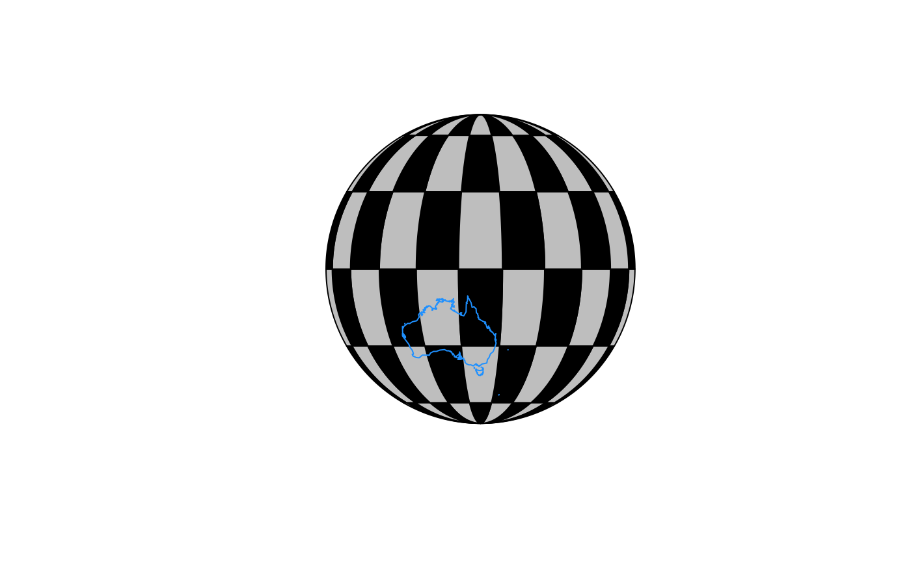

Specify the creation of lines along meridians by specifying their placement
at particular lons (longitudes) and lats (latitudes) and their extents
with xlim (extent of parallel line in longitude) and ylim (extent of meridional line in latitude).
graticule(lons, lats, nverts = 60, xlim, ylim, proj = NULL, tiles = FALSE)
| lons | longitudes for meridional lines |
|---|---|
| lats | latitudes for parallel lines |
| nverts | number of discrete vertices for each segment |
| xlim | maximum range of parallel lines |
| ylim | maximum range of meridional lines |
| proj | optional proj.4 string for output object |
| tiles | if |
Provide a valid PROJ.4 string to return the graticule lines in this projection. If this is not specified the graticule
lines are returned in their original longlat / WGS84.
All segments are discretized as _rhumb_lines_ at `getOption("graticule.mindist")` metres, which
defaults to `5e4`.
The arguments xlim, ylim and nverts are ignored if tiles is TRUE.
library(rgdal)#> #> #> #> #> #> #> #>x <- as.matrix(expand.grid(x = seq(100, 240, by = 15), y = seq(-85, -30, by = 15))) prj <- "+proj=laea +lon_0=180 +lat_0=-70 +ellps=WGS84" px <- project(x, prj) g <- graticule(unique(x[,1]), unique(x[,2]))#> Warning: longitude > 180#> Warning: longitude > 180#> Warning: longitude > 180#> Warning: longitude > 180#> Warning: longitude > 180#> Warning: longitude > 180#> Warning: longitude > 180#> Warning: longitude > 180#> Warning: longitude > 180#> Warning: longitude > 180#> Warning: longitude > 180#> Warning: longitude > 180#> Warning: longitude > 180#> Warning: longitude > 180#> Warning: longitude > 180#> Warning: longitude > 180#> Warning: longitude > 180#> Warning: longitude > 180#> Warning: longitude > 180#> Warning: longitude > 180#> Warning: longitude > 180#> Warning: longitude > 180#> Warning: longitude > 180#> Warning: longitude > 180#> Warning: longitude > 180#> Warning: longitude > 180#> Warning: longitude > 180#> Warning: longitude > 180#> Warning: longitude > 180#> Warning: longitude > 180#> Warning: longitude > 180#> Warning: longitude > 180#> Warning: longitude > 180#> Warning: longitude > 180#> Warning: longitude > 180#> Warning: longitude > 180#> Warning: longitude > 180#> Warning: longitude > 180#> Warning: longitude > 180#> Warning: longitude > 180#> Warning: longitude > 180#> Warning: longitude > 180#> Warning: longitude > 180#> Warning: longitude > 180#> Warning: longitude > 180#> Warning: longitude > 180#> Warning: longitude > 180#> Warning: longitude > 180#> Warning: longitude > 180#> Warning: longitude > 180#> Warning: longitude > 180#> Warning: longitude > 180#> Warning: longitude > 180#> Warning: longitude > 180#> Warning: longitude > 180#> Warning: longitude > 180#> Warning: longitude > 180#> Warning: longitude > 180#> Warning: longitude > 180#> Warning: longitude > 180#> Warning: longitude > 180#> Warning: longitude > 180#> Warning: longitude > 180#> Warning: longitude > 180#> Warning: longitude > 180#> Warning: longitude > 180#> Warning: longitude > 180#> Warning: longitude > 180#> Warning: longitude > 180#> Warning: longitude > 180#> Warning: longitude > 180#> Warning: longitude > 180#> Warning: longitude > 180#> Warning: longitude > 180#> Warning: longitude > 180#> Warning: longitude > 180#> Warning: longitude > 180#> Warning: longitude > 180#> Warning: longitude > 180#> Warning: longitude > 180#> Warning: longitude > 180#> Warning: longitude > 180#> Warning: longitude > 180#> Warning: longitude > 180#> Warning: longitude > 180#> Warning: longitude > 180#> Warning: longitude > 180#> Warning: longitude > 180#> Warning: longitude > 180#> Warning: longitude > 180#> Warning: longitude > 180#> Warning: longitude > 180#> Warning: longitude > 180#> Warning: longitude > 180#> Warning: longitude > 180#> Warning: longitude > 180prj <- "+proj=laea +lon_0=0 +lat_0=-90 +ellps=WGS84" xx <- c(-120, -100, -80, -60, -40); yy <- c(-65, -55, -45) g3 <- graticule(xx, yy, ylim = c(-70, -30), proj = prj) g3labs <- graticule_labels(xx, c(-65, -45), xline = -85, yline = -30, proj = prj) plot(g3)## polygonal graticule on Orthographic projection xx <- seq(-90, 90, length = 10) + 147 yy <- seq(-90, 90, length = 5) g <- graticule(xx, yy, proj = "+proj=ortho +lon_0=147 +ellps=WGS84", tiles = TRUE)#> Warning: longitude > 180#> Warning: longitude > 180#> Warning: longitude > 180#> Warning: longitude > 180#> Warning: longitude > 180#> Warning: longitude > 180#> Warning: longitude > 180#> Warning: longitude > 180#> Warning: longitude > 180#> Warning: longitude > 180#> Warning: longitude > 180#> Warning: longitude > 180#> Warning: longitude > 180#> Warning: longitude > 180#> Warning: longitude > 180#> Warning: longitude > 180#> Warning: longitude > 180#> Warning: longitude > 180#> Warning: longitude > 180#> Warning: longitude > 180#> Warning: longitude > 180#> Warning: longitude > 180#> Warning: longitude > 180#> Warning: longitude > 180#> Warning: longitude > 180#> Warning: longitude > 180#> Warning: longitude > 180#> Warning: longitude > 180#> Warning: longitude > 180#> Warning: longitude > 180#> Warning: longitude > 180#> Warning: longitude > 180#> Warning: longitude > 180#> Warning: longitude > 180#> Warning: longitude > 180#> Warning: longitude > 180#> Warning: longitude > 180#> Warning: longitude > 180#> Warning: longitude > 180#> Warning: longitude > 180#> Warning: longitude > 180#> Warning: longitude > 180#> Warning: longitude > 180#> Warning: longitude > 180#> Warning: longitude > 180#> Warning: longitude > 180#> Warning: longitude > 180#> Warning: longitude > 180#> Warning: longitude > 180#> Warning: longitude > 180#> Warning: longitude > 180#> Warning: longitude > 180#> Warning: longitude > 180#> Warning: longitude > 180#> Warning: longitude > 180#> Warning: longitude > 180#> Warning: longitude > 180#> Warning: longitude > 180#> Warning: longitude > 180#> Warning: longitude > 180#> Warning: longitude > 180#> Warning: longitude > 180#> Warning: longitude > 180#> Warning: longitude > 180#> Warning: longitude > 180#> Warning: longitude > 180#> Warning: longitude > 180#> Warning: longitude > 180#> Warning: longitude > 180#> Warning: longitude > 180#> Warning: longitude > 180#> Warning: longitude > 180#> Warning: longitude > 180#> Warning: longitude > 180#> Warning: longitude > 180#> Warning: longitude > 180#> Warning: longitude > 180#> Warning: longitude > 180#> Warning: longitude > 180#> Warning: longitude > 180#> Warning: longitude > 180#> Warning: longitude > 180#> Warning: longitude > 180#> Warning: longitude > 180#> Warning: longitude > 180#> Warning: longitude > 180#> Warning: longitude > 180#> Warning: longitude > 180#> Warning: longitude > 180#> Warning: longitude > 180#> Warning: longitude > 180#> Warning: longitude > 180#> Warning: longitude > 180#> Warning: longitude > 180#> Warning: longitude > 180#> Warning: longitude > 180#> Warning: longitude > 180#> Warning: longitude > 180#> Warning: longitude > 180#> Warning: longitude > 180#> Warning: longitude > 180#> Warning: longitude > 180#> Warning: longitude > 180#> Warning: longitude > 180#> Warning: longitude > 180#> Warning: longitude > 180#> Warning: longitude > 180#> Warning: longitude > 180#> Warning: longitude > 180#> Warning: longitude > 180#> Warning: longitude > 180#> Warning: longitude > 180#> Warning: longitude > 180#> Warning: longitude > 180#> Warning: longitude > 180#> Warning: longitude > 180#> Warning: longitude > 180#> Warning: longitude > 180#> Warning: longitude > 180#> Warning: longitude > 180#> Warning: longitude > 180#> Warning: longitude > 180#> Warning: longitude > 180#> Warning: longitude > 180#> Warning: longitude > 180#> Warning: longitude > 180#> Warning: longitude > 180#> Warning: longitude > 180#> Warning: longitude > 180#> Warning: longitude > 180#> Warning: longitude > 180#> Warning: longitude > 180#> Warning: longitude > 180#> Warning: longitude > 180#> Warning: longitude > 180#> Warning: longitude > 180#> Warning: longitude > 180#> Warning: longitude > 180#> Warning: longitude > 180#> Warning: longitude > 180#> Warning: longitude > 180#> Warning: longitude > 180#> Warning: longitude > 180#> Warning: longitude > 180#> Warning: longitude > 180#> Warning: longitude > 180#> Warning: longitude > 180#> Warning: longitude > 180#> Warning: longitude > 180#> Warning: longitude > 180#> Warning: longitude > 180#> Warning: longitude > 180#> Warning: longitude > 180#> Warning: longitude > 180#> Warning: longitude > 180#> Warning: longitude > 180#> Warning: longitude > 180#> Warning: longitude > 180#> Warning: longitude > 180#> Warning: longitude > 180#> Warning: longitude > 180#> Warning: longitude > 180#> Warning: longitude > 180#> Warning: longitude > 180#> Warning: longitude > 180#> Warning: longitude > 180#> Warning: longitude > 180#> Warning: longitude > 180library(maptools)#>data(wrld_simpl) w <- spTransform(subset(wrld_simpl, NAME == "Australia"), CRS(proj4string(g))) plot(w, add = TRUE, border = "dodgerblue")